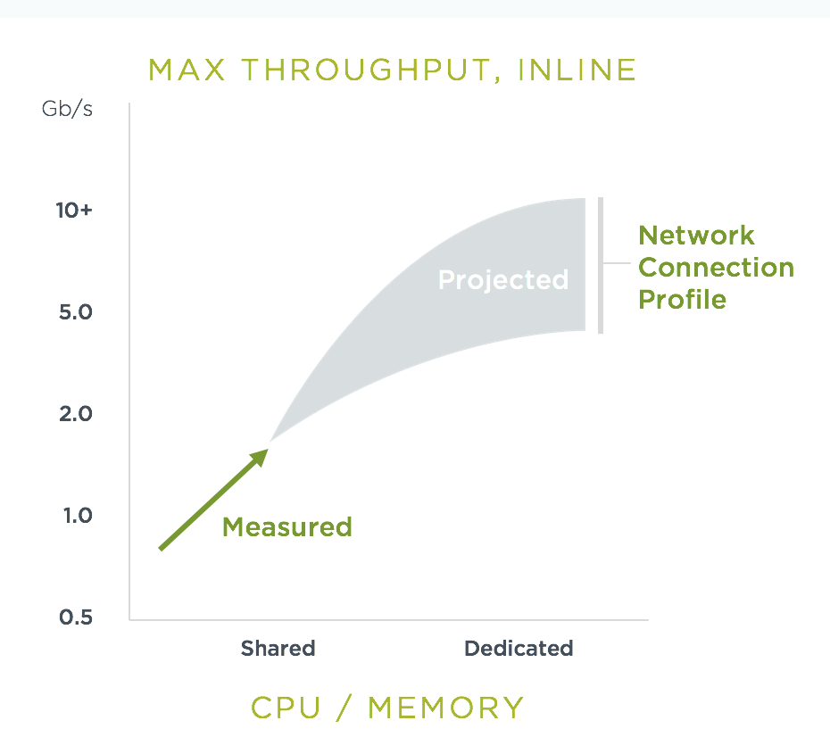

System Requirements
System Requirements
| Component | # of Instances | Recommended vCPU | Minimum Memory | Notes |
|---|---|---|---|---|
Controller |
min. 1 |
1 |
1GB |
vCPU core may be shared |
Enforcer |
1 per node/VM |
1+ |
1GB |
One or more dedicated vCPU for higher network throughput in Protect mode |
Scanner |
min. 1 |
1 |
1GB |
CPU core may be shared for standard workloads. |
Manager |
min 1 |
1 |
1GB |
vCPU may be shared |
-
For configuration backup/HA, a RWX PVC of 1Gi or more. See Backups and Persistent Data section for more details.
-
Recommended browser: Chrome for better performance
Supported Platforms
-
Officially supported linux distributions, SUSE Linux, Ubuntu, CentOS/Red Hat (RHEL), Debian, CoreOS, AWS Bottlerocket and Photon.
-
AMD64 and Arm architectures
-
CoreOS is supported (November 2023) for CVE scanning through RHEL mapping table provided by RedHat. Once an official feed is published by RedHat for CoreOS it will be supported.
-
Officially supported Kubernetes and Docker compliant container management systems. The following platforms are tested with every release of SUSE® Security: Kubernetes 1.19-1.32, SUSE Rancher (RKE, RKE2, K3s etc), RedHat OpenShift 4.6-4.16 (3.x to 4.12 supported prior to SUSE® Security 5.2.x), Google GKE, Amazon EKS, Microsoft Azure AKS, IBM IKS, native docker, docker swarm. The following Kubernetes and docker compliant platforms are supported and have been verified to work with SUSE® Security: VMware Photon and Tanzu, SUSE CaaS, Oracle OKE, Mirantis Kubernetes Engine, Nutanix Kubernetes Engine, docker UCP/DataCenter, docker Cloud.
-
Docker run-time version: 1.9.0 and up; Docker API version: 1.21, CE and EE.
-
Containerd and CRI-O run-times (requires changes to volume paths in sample yamls). See changes required for Containerd in the Kubernetes deployment section and CRI-O in the OpenShift deployment section.
-
SUSE® Security is compatible with most commercially supported CNI’s. Officially tested and supported are openshift ovs (subnet/multitenant), calico, flannel, cilium, antrea and public clouds (gke, aks, iks, eks). Support for Multus was added in v5.4.0.
-
Console: Chrome or Firefox browser recommended. IE 11 not supported due to performance issues.
-
Minikube is supported for simple initial evaluation but not for full proof of concept. See below for changes required for the Allinone yaml to run on Minikube.
AWS Bottlerocket Note: Must change path of the containerd socket specific to Bottleneck. Please see Kubernetes deployment section for details.
Not Supported
-
GKE Autopilot.
-
AWS ECS is no longer supported. (NOTE: No functionality has been actively removed for operating SUSE® Security on ECS deployments. However, testing on ECS is no longer being perfromed by SUSE. While protecting ECS workloads with SUSE® Security likely will operate as expected, issues will not be investigated.)
-
Docker on Mac
-
Docker on Windows
-
Rkt (container linux) from CoreOS
-
AppArmor on K3S / SLES environments. Certain configurations may conflict with SUSE® Security and cause scanner errors; AppArmor should be disabled when deploying SUSE® Security.
-
IPv6 is not supported
-
VMWare Integrated Containers (VIC) except in nested mode
-
CloudFoundry
-
Console: IE 11 not supported due to performance issues.
-
Nested container host in a container tools used for simple testing. For example, deployment of a Kubernetes cluster using 'kind' https://kind.sigs.k8s.io/docs/user/configuration/.
|
PKS is field tested and requires enabling privileged containers to the plan/tile, and changing the yaml hostPath as follows for Allinone, Controller, Enforcer: |
|
SUSE® Security supports running on linux-based VMs on Mac/Windows using Vagrant, VirtualBox, VMware or other virtualized environments. |
Minikube
Please make the following changes to the Allinone deployment yaml.
apiVersion: apps/v1 <<-- required for k8s 1.19
kind: DaemonSet
metadata:
name: neuvector-allinone-pod
namespace: neuvector
spec:
selector: <-- Added
matchLabels: <-- Added
app: neuvector-allinone-pod <-- Added
minReadySeconds: 60
...
nodeSelector: <-- DELETE THIS LINE
nvallinone: "true" <-- DELETE THIS LINE
apiVersion: apps/v1 <<-- required for k8s 1.19
kind: DaemonSet
metadata:
name: neuvector-enforcer-pod
namespace: neuvector
spec:
selector: <-- Added
matchLabels: <-- Added
app: neuvector-enforcer-pod <-- AddedPerformance and Scaling
As always, performance planning for SUSE® Security containers will depend on several factors, including:
-
(Controller & Scanner) Number and size of images in registry to be scanned (by Scanner) initially
-
(Enforcer) Services mode (Discover, Monitor, Protect), where Protect mode runs as an inline firewall
-
(Enforcer) Type of network connections for workloads in Protect mode
In Monitor mode (network filtering similar to a mirror/tap), there is no performance impact and the Enforcer handles traffic at line speed, generating alerts as needed. In Protect mode (inline firewall), the Enforcer requires CPU and memory to filter connections with deep packet inspection and hold them to determine whether they should be blocked/dropped. Generally, with 1GB of memory and a shared CPU, the Enforcer should be able to handle most environments while in Protect mode.
For throughput or latency sensitive environments, additional memory and/or a dedicated CPU core can be allocated to the SUSE® Security Enforcer container.
For performance tuning of the Controller and Scanner for registry scanning, see System Requirements above.
For additional advice on performance and sizing, see the Onboarding/Best Practices section.
Throughput
As the chart below shows, basic throughput benchmark tests showed a maximum throughput of 1.3 Gbps PER NODE on a small public cloud instance with 4 CPU cores. For example, a 10 node cluster would then be able to handle a maximum of 13 Gbps of throughput for the entire cluster for services in Protect mode.

This throughput would be projected to scale up as dedicated a CPU is assigned to the Enforcer, or the CPU speed changes, and/or additional memory is allocated. Again, the scaling will be dependent on the type of network/application traffic of the workloads.
Latency
Latency is another performance metric which depends on the type of network connections. Similar to throughput, latency is not affected in Monitor mode, only for services in Protect (inline firewall) mode. Small packets or simple/fast services will generate a higher latency by SUSE® Security as a percentage, while larger packets or services requiring complex processing will show a lower percentage of added latency by the SUSE® Security enforcer.
The table below shows the average latency of 2-10% benchmarked using the Redis benchmark tool. The Redis Benchmark uses fairly small packets, so the the latency with larger packets would expected to be lower.
| Test | Monitor | Protect | Latency |
|---|---|---|---|
PING_INLINE |
34,904 |
31,603 |
9.46% |
SET |
38,618 |
36,157 |
6.37% |
GET |
36,055 |
35,184 |
2.42% |
LPUSH |
39,853 |
35,994 |
9.68% |
RPUSH |
37,685 |
36,010 |
4.45% |
LPUSH (LRANGE Benchmark) |
37,399 |
35,220 |
5.83% |
LRANGE_100 |
25,539 |
23,906 |
6.39% |
LRANGE_300 |
13,082 |
12,277 |
6.15% |
The benchmark above shows average TPS of Protect mode versus Monitor mode, and the latency added for Protect mode for several tests in the benchmark. The main way to lower the actual latency (microseconds) in Protect mode is to run on a system with a faster CPU. You can find more details on this open source Redis benchmark tool at https://redis.io/topics/benchmarks.
Adding Scaling Constraints for Large Workload Environments
During NeuVector installation, if your host operating system has a large amount of workloads then the NeuVector Enforcer pods can fail to spin up when trying to open the large volume of files due to the pods host monitoring. This can also cause RKE2-server failures because of the large amounts of open files.
As a workaround for large workload environments, you need to create a file such as example-fs-max.conf in the location /etc/sysctl.d/ and add scaling constraints with the following configuration:
fs.inotify.max_user_instances=8192
fs.inotify.max_user_watches=524288
fs.filemax=5000Then ensure the configuration is applied with a restart via the following command:
systemctl restart systemd-sysctl